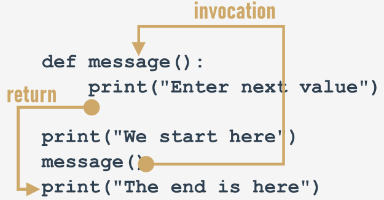

How functions work
Look at the picture below:

Explaining how functions work
It tries to show you the whole process:
when you invoke a function, Python remembers the place where it happened and jumps into the invoked function;
the body of the function is then executed;
reaching the end of the function forces Python to return to the place directly after the point of invocation.
There are two, very important, catches. Here's the first of them:
You mustn't invoke a function which is not known at the moment of invocation.
Remember - Python reads your code from top to bottom. It's not going to look ahead in order to find a function you forgot to put in the right place ("right" means "before invocation".)
We've inserted an error into this code - can you see the difference?
print("We start here.")
message()
print("We end here.")
def message():
print("Enter a value: ")
We've moved the function to the end of the code. Is Python able to find it when the execution reaches the invocation?
No, it isn't. The error message will read:
NameError: name 'message' is not defined
output
Don't try to force Python to look for functions you didn't deliver at the right time.
The second catch sounds a little simpler:
You mustn't have a function and a variable of the same name.
The following snippet is erroneous:
def message():
print("Enter a value: ")
message = 1
Assigning a value to the name message causes Python to forget its previous role. The function named message becomes unavailable.
Fortunately, you're free to mix your code with functions - you're not obliged to put all your functions at the top of your source file.
Look at the snippet:
print("We start here.")
def message():
print("Enter a value: ")
message()
print("We end here.")
It may look strange, but it's completely correct, and works as intended.
Let's return to our primary example, and employ the function for the right job, like here:
def message():
print("Enter a value: ")
message()
a = int(input())
message()
b = int(input())
message()
c = int(input())
Modifying the prompting message is now easy and clear - you can do it by changing the code in just one place - inside the function's body.
Open the sandbox, and try to do it yourself.